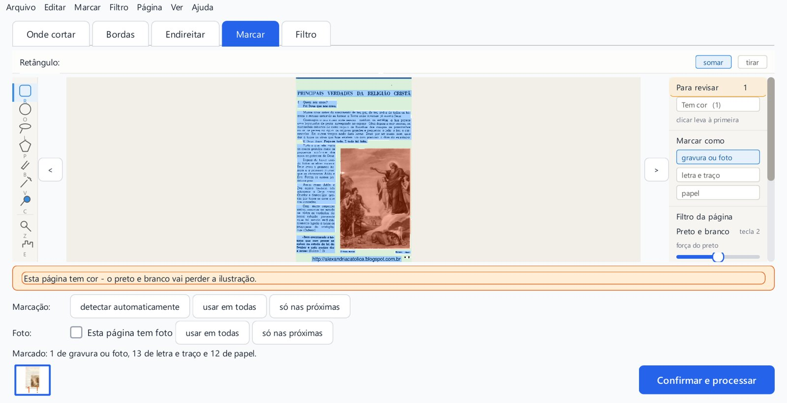
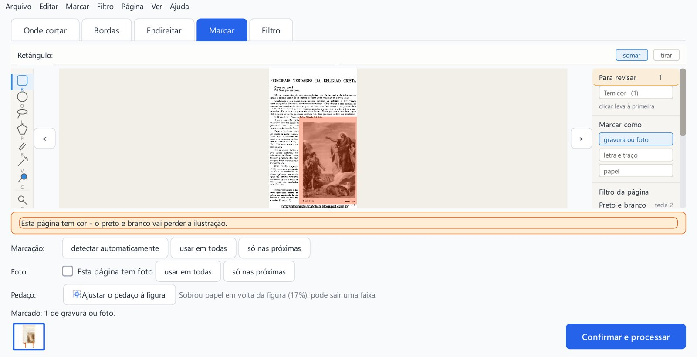
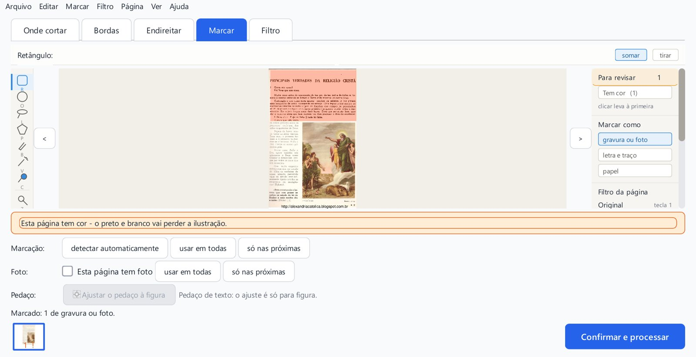
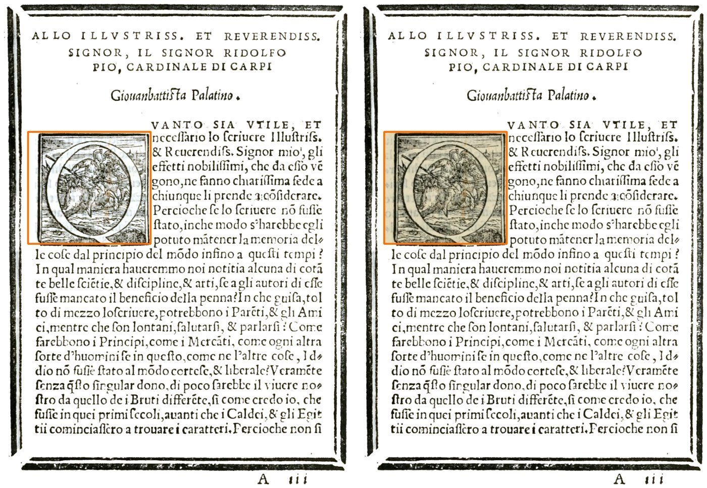
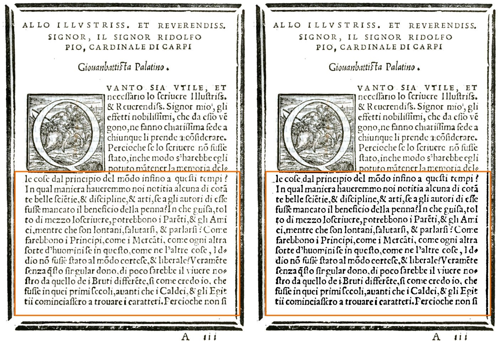

Conferência 15 — a aba Marcar com o botão novo
Estes três consertos você já aprovou: o "Ajustar o pedaço à figura" (conferência 13) e o "Tirar o fundo" obedecendo ao pedaço (conferência 14). Como mexem na tela, eu mostro antes de juntar ao programa. As imagens são do programa de verdade, na tela do Kaique (1280×657). A aparência final da aba Marcar ainda vai ser decidida com o agente de layout.
M1A aba Marcar com a linha "Pedaço:"
Quando há um pedaço com folga em volta de uma figura, aparece embaixo a linha "Pedaço:", com o botão "Ajustar o pedaço à figura" e um aviso curto: "Sobrou papel em volta da figura (17%): pode sair uma faixa." Agora todos os botões aparecem inteiros. Para caber, a área da página fica um pouco menor enquanto a linha aparece.


M2Pedaço de texto: o botão fica apagado, com o porquê
Antes, num pedaço de texto, o botão cortava linhas e palavras. Agora o programa percebe que é texto: não avisa, e o botão fica apagado com a frase "Pedaço de texto: o ajuste é só para figura." O botão também passou a ajustar só um pedaço por clique (o último desenhado em volta de uma figura), e não todos de uma vez.

F1"Tirar o fundo" obedecendo ao pedaço (Palatino 9)
Como você pediu, um pedaço marcado numa página com o fundo tirado agora sai no filtro escolhido para ele. O pedaço é tirado da página como veio do scanner: por isso, um pedaço em Original mostra o papel amarelado de verdade (a capitular Q, à direita), e não o branco do fundo tirado. Um pedaço em Preto e branco sai em preto e branco.


Referência: ramo pedaco-e-salvo-2-2026-10-05 (commits 1088e6b, 479d4ad, 50b9319); relatório em .claude/worktrees/consertos3/relatorios/conferir/pedaco-em-original-2026-10-05/consertos-3/.